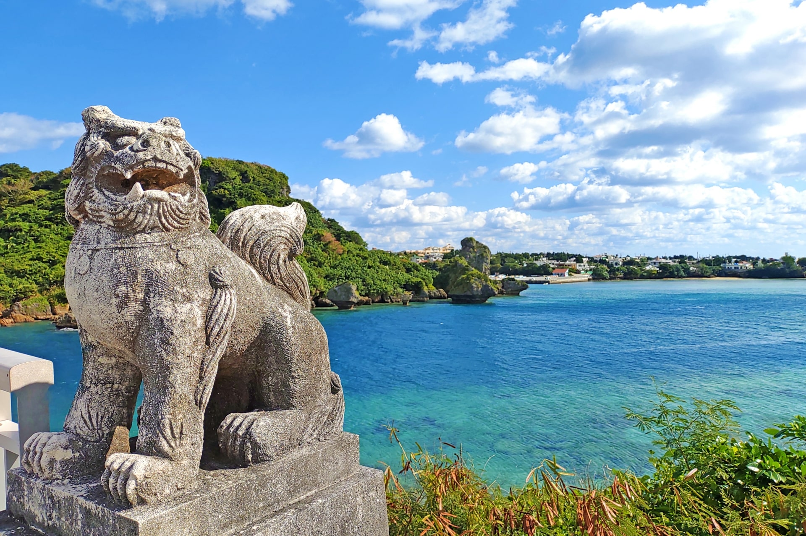

Explore Okinawa
Visit Unique Places
Explore the ruins and restored castles of the Ryukyu kings, and visit beautiful beaches and coastlines with an amazing array of coral and undersea life. You will experience the natural beauty and rich cultural heritage of Okinawa
We introduce some places in Okinawa where you will get amazing experiences and inspiration. We also show you some interesting and unique Okinawan culture and traditions.
In case you are considering visiting Okinawa, please keep in mind the following information as well.
Travel Information
Getting to Okinawa
Direct international flights to Okinawa are limited to major cities around Asia. If you fly from the U.S., you need to take an international flight to major cities like Tokyo and Osaka, and take a domestic flight to the Naha Airport, which is the main entry for visitors to Okinawa.
Transportation in Okinawa
- Yui Rail
- Rental Vehicles
- Buses
- Taxis
- Express Ferries
Weather
The climate is humid and subtropical. It gets hot during the day most of the time. Sweaters and jackets might be needed in winter time. The rainy season is between May and late June. There is a chance of typhoons from June through September.